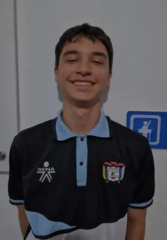
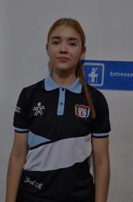
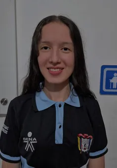

Inicio / Sobre el equipo
Somos estudiantes de la técnica en sistemas y queremos enseñarte a construir proyectos de Arduino con impresión 3D.
"Nuestra mayor alegría sería que los estudiantes aprendan y se animen a crear sus propios proyectos."


